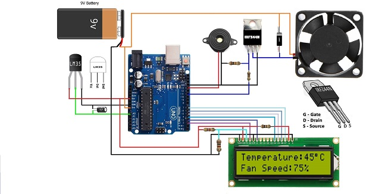

This is a showcase of my work and skills.
I am passionate about web development and creating user-friendly experiences."Recent graduate with a solid foundation in Electronis and Communication and Information Technology".A proactive learner eager to contribute technical skills and adaptability to achieve project goals and grow within a dynamic team environment."
it's based on arduino uno and Ultrasonic sonar sensor to make conntact less measurement at any place.
Using C++ for coding in microcontroller.low power counsumotion and live output on the display.using I2C protocols.
It's a small demonstration of the how the RTOS(real time oprating system)work.
Using arduino uno and Seven segment display ,Rotor and colour led to run various task in RTOS.
The system is use Lm35 sensor for reding Tempracture and coding in C++ in arduino Uno bord.
It's also give an alarm system when tempracture rise also show fan speed and tempracture.
